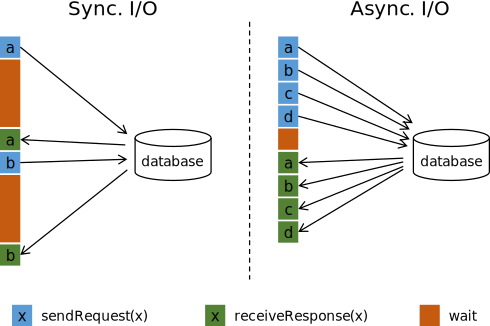

Apache Flink
Roman Bartusiak
General
- Stephan Ewen
- data Artisans
- TU Berlin
- Huge community
- JVM
Dataflow programming model

- Stateful streams
- DataStream
- Table API - under development
- SQL - under development
- Source
- Transformation
- Sink

-
Program
-
Task
- Subtask
- Subtask
- ...
- Task
- ...
-
Task
Dataflow Graph
- Directed Acyclic Graph - but not exactly
- Represents computations
- We are not doing computations in our code, we are creating graphs and executing them
Parallelism
- operator
- execution environent
- client
- system wide
Data transport
- one-to-one - preserver ordering and partitioning
- redistributing - each event can have different target subtask
Windows
- time driven
- data driven
- tumbling - no overlap
- sliding - overlap
- session - punctuated by inactivity

Time
- Creation
- Ingestion
- Processing

Stateful Operators
- transparent
- key/value store
- requires keyBy()

Fault tolerance
- stream reply
- checkpointing
Batch
- data as a stream source
- no checkpointing
Flink architecture

- many Job Managers (Drivers) - many Task Managers (Workers)
- Applications are SHARING JVM
- Each node must be able to connect to all other nodes
- Flink program - our main() (or remote environment execution), defines Dataflow
- Job Manager - executes our Dataflow, schedules Dataflow graph, manages checkpointing
- Task manager - executes subtasks from Dataflow, can be configured by number of task slots

- one task slot per task manager - spearate JVM for tasks
- more than one task slot per task manager - tasks share JVM, no CPU isolation, only memory management
Flink components

Runtimes
- Local JVM
- Standalone
- YARN
- Mesos
- Cloud
Local JVM
ExecutionEnvironment.getExecutionEnvironment()
Standalone
-
Simply:
- Create configurat1ion
- Put up job manager
- Add task managers to cluster
Remote
ExecutionEnvironment
.createRemoteEnvironment("flink-master",
8081,
"/home/user/udfs.jar");
Basic API
- Create execution environment
- Load initial data
- Transform data
- Specify where to put results
- Execute program
- LAZY EVALUATION
- join, coGroup, keyBy, groupBy - requires keys
- Reduce, GroupReduce, Aggregate, Windows - keys are optional
- keys are virtual
val input: DataStream[(Int, String, Long)] = ???
val keyed = input.keyBy(0)
val input: DataSet[(Int, String, Long)] = ???
val grouped = input.groupBy(0,1)
Keys using Field Expressions
- "field" - field name
- "_1", "0" - tuple elements
- "_1._1" - nested fields
- "_" - whole type
NO TYPES??!!
case class WC(word: String, count: Int)
val words: DataStream[WC] = // [...]
val keyed = words.keyBy( _.word )
TYPES!!!
Transformations
- map, reduce, etc.
- rich functions
Accumulators
- add
- result
DataStream API
Sources
- text file
- file
- socket
- collections
- connectors
Sources - connectors
- Kafka
- Amazon Kinesis
- RabitMQ
- NiFi
Transformations
- map - N -> R
- flatMap - N -> DataStream[R]
- filter - N -> N
- keyBy - N -> KeyedStream[N, K]
- reduce - N -> N
- fold - N -> K
- sum, min, max, minBy, maxBy
- window - KeyedStream[N, K] -> WindowedStream[N, K, W]
- !!! windowAll - N -> AllWindowStream[N, W]
- union
- join
- connect (DataStream[N], Datastream[K]) -> ConnectedStream[N, K]
- split DataStream[N] -> SplitStream[N]
Sinks
- text file
- CSV
- file
- socket
- connectors
Sinks - connectors
- Kafka
- Cassandra
- Amazon Kinesis
- Elasticsearch
- HDFS
- RabitMQ
- NiFi
Async IO
Buffering
- latency
- throughput